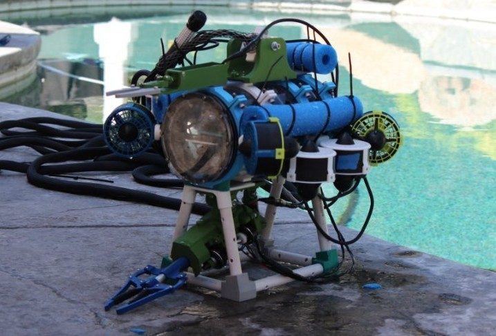
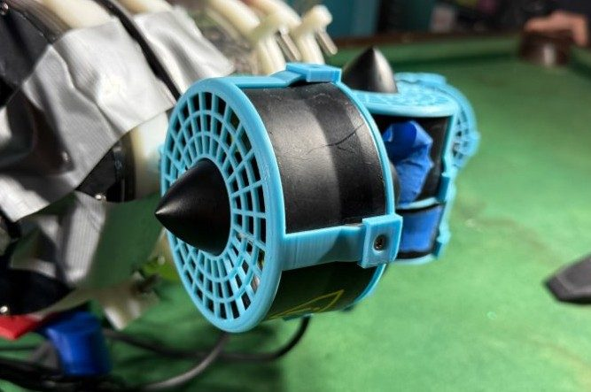
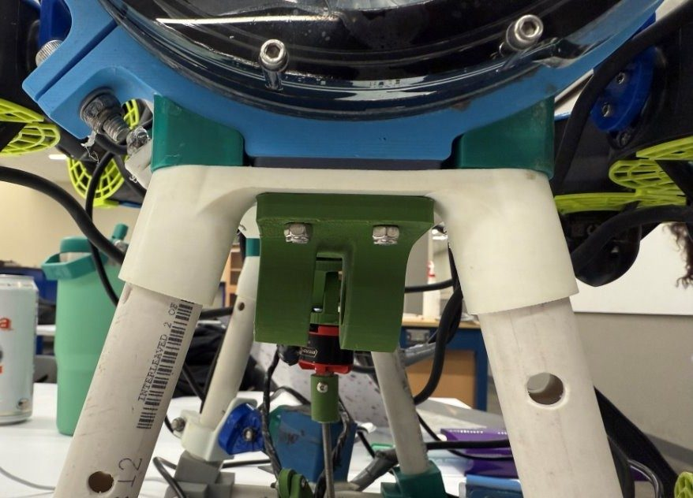
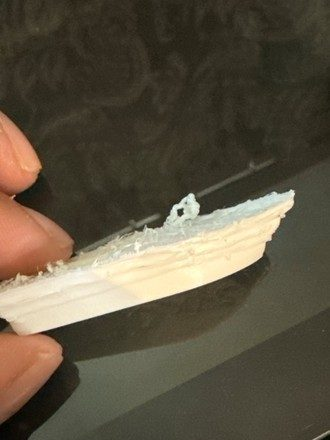
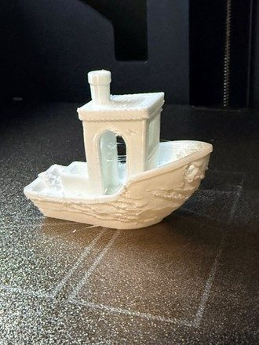
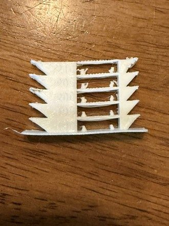
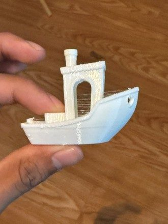
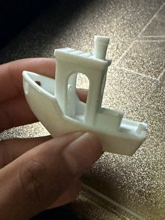

Crush Depth 2025
Overview
For the Clovis Community College MATE ROV team, Crush Depth, I served as the lead designer for the Vertical Profiling Float (PERRY), the lead additive manufacturer for all ROV components, and a general mechanical designer for the ROV (SCYLLA).


Thruster Shrouds
I designed protective shrouds for Blue Robotics T-200 thrusters. The design focuses on safety, water flow, and serviceability. The design utilizes pre-existing mounting hardware, to simplify assembly and maintenance, ensuring rapid part replacement during competition testing.

Leg Joints
I developed leg joints to provide adjustable ground clearance and impact resistance. The joints interface with existing frame bolts on the bottom of the ROV and connect with PVC Pipe to the feet. Initial prototypes printed in ABS had repeated impact failures. Transitioned to TPU filament to balance static load strength with the flexibility needed to withstand pool wall collisions.
Additive Manufacturing
I managed part fabrication using largely generic, sponsor-provided filaments with minimal documentation. Through material and slicer tuning, I established reliable print parameters for consistent dimensional accuracy and strength. This was critical for TPU components in particular. I optimized extrusion temperature, print speed, and implemented filament drying protocols, significantly improving surface finish and inter-layer bonding.




